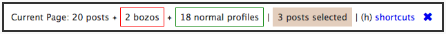
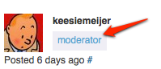

Javascript bookmarklet
Drag this bookmarklet to your browser's bookmark menu: Moderator Tools
Go to one of the listed pages above and click the bookmarklet in your browser bookmark bar. Type "m" (menu) to see what shortcuts are available.
Tools for WordPress dot org forum moderators
Note: This is not the latest version, check out the latest stable release.
A Javascript tool that adds keyboard shortcuts (navigation) and a menu to the following pages.
Where possible "&view=all" is appended to topic link urls. This allows logged in moderators to see deleted and spam posts in a thread.
This tool can be installed in three ways, as a Javascript bookmarklet, a Firefox add-on, or a Greasemonkey user script (Firefox, Chrome). The add-on and user scripts run automatically on the specific pages and the bookmarklet has to be clicked from the browser bookmark menu.
See the Disclaimer about using the user scripts in other browsers.
Older versions of the scripts below can be found at the Release Archive or Github.
Drag this bookmarklet to your browser's bookmark menu: Moderator Tools
Go to one of the listed pages above and click the bookmarklet in your browser bookmark bar. Type "m" (menu) to see what shortcuts are available.
Click to install the Firefox Addon
Or download the Firefox Addon and add it manually.
Restart Firefox for the add-on to be activated.
Note: Remove earlier versions (if you have them) from the Firefox add-on page.
The add-on was created by this Greasemonkey script compiler.
Code used in the compiler: wp_moderator_shortcuts.js
Install Greasemonkey (If you haven't done so already).
Click to install the: Firefox Greasemonkey user script
(No need to install Greasemonkey)
Download the user script if it doesn't install. Unzip it and drop the file in the Chrome "Extensions" page.
Alternative methods:
Use the Tampermonkey Chrome extension to manage your user scripts.(thanks Jan!). The extension allows scripts to be added outside the Chrome Web Store directly.
If the keyboard schortcuts open a new window and you want it to open a new tab use this Chrome extension.
By typing "m" you open the menu where you can see information about the page and what shortcuts are available.
A "Edit Profile" link is automatically added to all posts.

You can select a post by clicking in the author column. The author column gets a new background color when the post is selected (for visibility).

The menu.

Clicking "shortcuts" or typing "h" displays all shortcuts available for that page.
The current post is marked by a grey border.


The current post is marked by a grey background color for the "User Type"

Go and play and test all the shortcuts for yourself.
If a thread contains duplicate IP's for different users it will show a warning (DUPLICATE IP) in all posts with the duplicate IP. Be aware that users with the same IP doesn't necessarily mean the users are gaming the system.
A button is added to the post editor to uncapitalize selected text. This button can be used for the post text and the topic title
Example before selecting text and clicking the button.
After.
The Greasemonkey user scripts hides the menu by default and uses a brownish background color for selected posts. By editing the Greasemonkey file you can have it show the menu by default and change the selected color. Find var R="hide";var h="#e3cebd"; at the start of the minified javascript. Change "hide" to show var R="show"; and change the color in var h="#e3cebd"; to your liking and save the file.
All the user scripts are tested in Firefox and Chrome. If other browsers support Greasemonkey user scripts try one of the (user.js) files found on this page. The Javascript bookmarklet can be used in all browsers.
Happy moderating